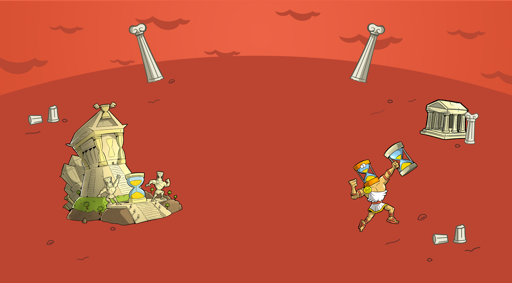
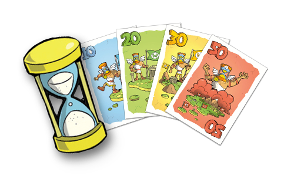
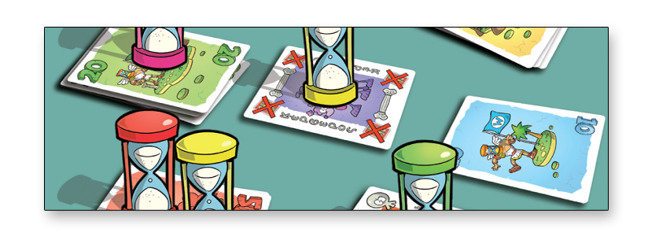
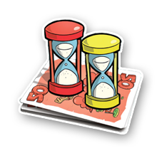
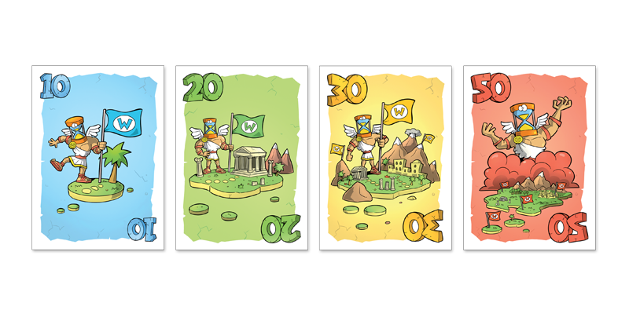
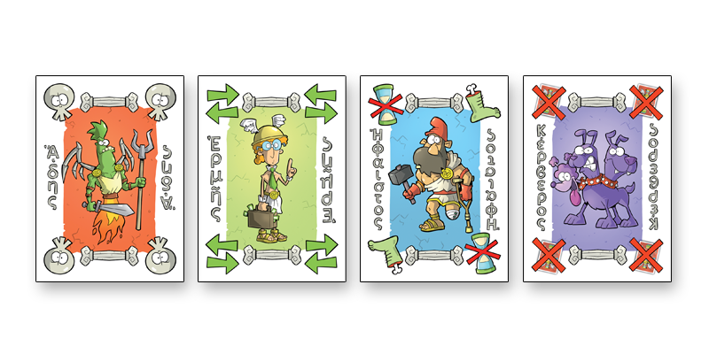
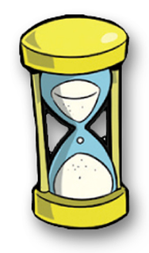
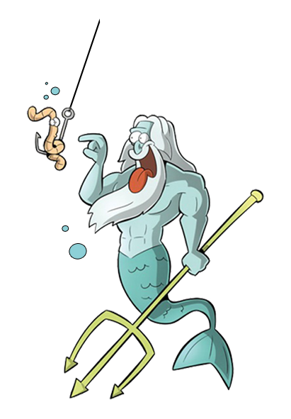
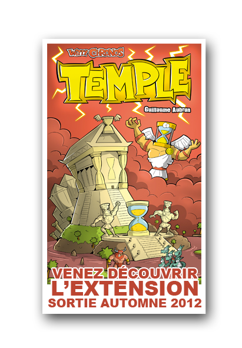

<!DOCTYPE html>
<html>
 <head>

  <meta http-equiv="Content-type" content="text/html;charset=UTF-8"/>
  <meta name="generator" content="1.0.948.120"/>
  <title>Page le jeu</title>
  <link rel="icon" type="image/png" href="images/favicon.png" />
  <!-- CSS -->
  <link rel="stylesheet" type="text/css" href="css/site_global.css?4075768122"/>
  <link rel="stylesheet" type="text/css" href="css/master_a-gabarit.css?4136317699"/>
  <link rel="stylesheet" type="text/css" href="css/index.css?421826208"/>
  <!-- Other scripts -->
  <script type="text/javascript">
   document.documentElement.className = 'js';
</script>
   </head>
 <body>

  <div class="clearfix" id="page"><!-- column -->
   <div class="position_content" id="page_position_content">
    <div class="clearfix colelem" id="pu70"><!-- group -->
     <div class="grpelem" id="u70"><!-- image -->
      
     </div>
     <a class="nonblock nontext MuseLinkActive grpelem" id="u75" href="index.html"><!-- image --></a>
     <a class="nonblock nontext MuseLinkActive grpelem" id="u85" href="index.html"><!-- simple frame --></a>
     <a class="nonblock nontext grpelem" id="u109" href="page-presse.html"><!-- simple frame --></a>
     <div class="grpelem" id="u121"><!-- image -->
      
     </div>
     <a class="nonblock nontext grpelem" id="u97" href="page-contact.html"><!-- simple frame --></a>
     <div class="clearfix grpelem" id="ppu207"><!-- column -->
      <div class="colelem" id="pu207"><!-- inclusion -->
       <div id="pu207_position_content">
        <table class="inclusion_context">
         <tr>
          <td class="inclelem" id="u207"><!-- simple frame -->
           <div style="width: 305px;"></div>
          </td>
          <td class="inclelem" id="pu207_position_inner_content">
           <div class="clearfix" id="pu208-17"><!-- group -->
            <div class="clearfix grpelem" id="u208-17"><!-- content -->
             <p id="u208-2">Il peut au choix : </p>
             <p id="u208-3">&nbsp;</p>
             <p>&#45; le mettre <span id="u208-5">sur n’importe quelle pile</span>, en le retournant. </p>
             <p>&nbsp;</p>
             <p id="u208-12">&#45; le mettre <span id="u208-10">devant lui</span>, en dehors du jeu, sans le retourner. </p>
             <p id="u208-13">&nbsp;</p>
             <p id="u208-15">On n’est pas obligé de déplacer un sablier qui s’est écoulé. </p>
            </div>
           </div>
          </td>
         </tr>
        </table>
       </div>
      </div>
      <div class="clearfix colelem" id="pu243"><!-- group -->
       <a class="nonblock nontext grpelem" id="u243" href="http://www.mywittygames.com/shop/product/witty-chronos"><!-- image --></a>
       <div class="grpelem" id="u133"><!-- custom html -->
        <iframe frameborder="0" width="480" height="276" src="http://www.dailymotion.com/embed/video/xho4oq_video-d-une-partie-geante-de-witty-chronos_creation"></iframe>
</div>
      </div>
      <div class="clearfix colelem" id="u132-6"><!-- content -->
       <p>Witty Chronos est un jeu de stratégie qui repose sur un mécanisme innovant : les sabliers deviennent des pions du jeu.</p>
       <p>Avec Witty Chronos, il faut savoir jouer avec le temps ! </p>
      </div>
      <div class="clearfix colelem" id="pu135"><!-- group -->
       <div class="clearfix grpelem" id="u135"><!-- group -->
        <div class="clearfix grpelem" id="u183-19"><!-- content -->
         <p id="u183-2">PRINCIPE DU JEU</p>
         <p id="u183-3">&nbsp;</p>
         <p id="u183-13">Le principe est le suivant : chaque joueur<span id="u183-5">&nbsp;retourne un de ses sabliers </span><span id="u183-6">et le</span><span id="u183-7">&nbsp;pose sur une pile de cartes.</span>&nbsp;Quand le sablier s’est vidé, si aucun autre sablier n’est sur la pile, le joueur peut prendre la carte du dessus de la pile et <span id="u183-9">conquérir</span>&nbsp;ainsi <span id="u183-11">des territoires</span>.</p>
         <p id="u183-17">Le premier joueur qui réussit à conquérir des territoires d’une valeur cumulée de <span id="u183-15">100 points</span>&nbsp;ou plus remporte la manche. Le grand vainqueur est le premier joueur à remporter 3 manches.</p>
        </div>
       </div>
       <div class="grpelem" id="u184"><!-- image -->
        
       </div>
      </div>
      <div class="clearfix colelem" id="pu137"><!-- group -->
       <div class="clearfix grpelem" id="u137"><!-- column -->
        <div class="clearfix colelem" id="u205-4"><!-- content -->
         <p>RÈGLES DU JEU</p>
        </div>
        <div class="clearfix colelem" id="u204-11"><!-- content -->
         <p id="u204-4">Il n’y a pas d’ordre de jeu : tous les joueurs <span id="u204-2">jouent simultanément</span>, il faut savoir mener sa galère pour réussir à remporter les meilleures cartes. </p>
         <p id="u204-5">&nbsp;</p>
         <p id="u204-9">Un joueur ne peut déplacer un sablier que si il est de sa couleur et que si il n’est pas en train de s’écouler <span id="u204-7">(il est interdit de déplacer un sablier qui s’écoule ou un sablier d’un autre joueur)</span>. </p>
        </div>
       </div>
       <div class="grpelem" id="u199"><!-- image -->
        
       </div>
       <div class="grpelem" id="u189"><!-- image -->
        
       </div>
      </div>
      <div class="clearfix colelem" id="pu139"><!-- group -->
       <div class="clearfix grpelem" id="u139"><!-- column -->
        <div class="position_content" id="u139_position_content">
         <div class="clearfix colelem" id="u206-4"><!-- content -->
          <p>CARTES &quot;DIEU&quot;</p>
         </div>
         <div class="clearfix colelem" id="u210-4"><!-- content -->
          <p>Les dieux peuvent vous aider à conquérir des territoires et freiner la progression de vos adversaires. Pour gagner à Witty Chronos, il faudra savoir vous attirer leurs faveurs ! Lorsqu’un joueur prend une carte « Dieu », il doit effectuer l’action correspondante : </p>
         </div>
         <div class="colelem" id="u225"><!-- image -->
          
         </div>
        </div>
       </div>
       <div class="clearfix grpelem" id="u224-4"><!-- content -->
        <p>CARTES &quot;POINTS&quot;</p>
       </div>
       <div class="grpelem" id="u211"><!-- image -->
        
       </div>
       <div class="clearfix grpelem" id="u216-8"><!-- content -->
        <p id="u216-2">HADÈS </p>
        <p id="u216-4"><span id="u216-3">marque la fin de la manche. </span></p>
        <p id="u216-6">Parfois la fin justifie les moyens ! Quand cette carte est prise, la manche prend fin immédiatement. On compte les points pour savoir qui gagne la manche. </p>
       </div>
       <div class="clearfix grpelem" id="u218-8"><!-- content -->
        <p id="u218-2">HERMÈS </p>
        <p id="u218-4">permet de s’approprier des territoires par la ruse.</p>
        <p id="u218-6">Le joueur qui prend cette carte peut échanger immédiatement la pile de cartes « Territoire » qu’il a amassées avec la pile de cartes « Territoire » amassées par le joueur de son choix (il peut choisir de prendre la carte HERMES et de ne pas échanger). La carte HERMES est défaussée. </p>
       </div>
       <div class="clearfix grpelem" id="u220-7"><!-- content -->
        <p id="u220-2">HEPHAÏSTOS</p>
        <p id="u220-5"><span id="u220-3">vous permet d’amputer vos adversaires </span>(faites attention à ne pas y laisser un bras !). Le joueur qui prend cette carte choisit immédiatement un sablier adverse et le range dans le sac en tissu. Ce sablier est inutilisable jusqu’à la fin de la manche. La carte HEPHAÏSTOS est défaussée. </p>
       </div>
       <div class="clearfix grpelem" id="u222-14"><!-- content -->
        <p id="u222-2">CERBÈRE</p>
        <p id="u222-4">vous permet d’annuler une conquête adverse.</p>
        <p id="u222-6">Le joueur qui prend cette</p>
        <p id="u222-8">carte retire immédiatement la première carte (celle qui est visible) de la pile de cartes</p>
        <p id="u222-10">« Territoire » du joueur de son choix. Cette carte est défaussée, ainsi que la</p>
        <p id="u222-12">carte CERBERE.&nbsp; </p>
       </div>
      </div>
      <div class="clearfix colelem" id="u141"><!-- group -->
       <div class="grpelem" id="u238"><!-- image -->
        
       </div>
       <div class="clearfix grpelem" id="pu237-4"><!-- column -->
        <div class="clearfix colelem" id="u237-4"><!-- content -->
         <p>JEU EN ÉQUIPES</p>
        </div>
        <div class="clearfix colelem" id="u236-15"><!-- content -->
         <p>Pour le jeu par équipes, retirez les deux cartes HEPHAÏSTOS. </p>
         <p>Les joueurs forment des équipes de <span id="u236-4">2 joueurs</span>&nbsp;qui resteront les mêmes pour toute la partie. Chaque équipe tire au sort une couleur et chaque coéquipier jouera avec un seul sablier de cette couleur. Chaque joueur cumule des cartes « Territoire » séparément de son coéquipier. Comme dans le jeu individuel, la manche s’arrête lorsqu’un joueur atteint 100 points ou lorsque la carte HADES est prise ou lorsqu’une pile est vide. Chaque équipe ne conserve que le score du joueur qui a remporté le plus de points. Celle qui a <span id="u236-6">le plus grand score remporte la manche</span>&nbsp;et pioche un jeton « Manche Gagnée ». </p>
         <p>Le nombre de piles à mettre en place en début de manche correspond au nombre d’équipes, plus trois. Si vous jouez à 6, il y aura 6 piles. Si vous jouez à 8, il y aura 7 piles. Si vous jouez à 10, il y aura 8 piles.</p>
         <p><span id="u236-11">La première équipe à remporter trois manches remporte la partie</span>. Elle se partagera donc le trône, et comme on dit : si il y a de la place pour un, il y en a pour deux ! </p>
        </div>
       </div>
      </div>
     </div>
    </div>
    <div class="clearfix colelem" id="master-footer"><!-- group -->
     <div class="clearfix grpelem" id="u163"><!-- group -->
      <div class="clearfix grpelem" id="u147"><!-- group -->
       <div class="grpelem" id="u148"><!-- image -->
        
       </div>
      </div>
      <div class="grpelem" id="u142"><!-- simple frame --></div>
      <div class="grpelem" id="u153"><!-- image -->
       
      </div>
      <div class="grpelem" id="u158"><!-- image -->
       
      </div>
     </div>
    </div>
   </div>
  </div>
  <div class="preload_images">
   
   
   
  </div>
  <!-- JS includes -->
  <script src="http://musecdn.businesscatalyst.com/scripts/1.1/jquery-1.7.min.js" type="text/javascript"></script>
  <script type="text/javascript">
   window.jQuery || document.write('\x3Cscript src="scripts/1.1/jquery-1.7.min.js" type="text/javascript">\x3C/script>');
</script>
  <script src="scripts/1.1/sprydomutils.js?4230755498" type="text/javascript"></script>
  <script src="scripts/1.1/museutils.js?3762396489" type="text/javascript"></script>
  <!-- Other scripts -->
  <script type="text/javascript">
   Muse.Utils.addSelectorFn('body', Muse.Utils.transformMarkupToFixBrowserProblemsPreInit);/* body */
Muse.Utils.addSelectorFn('a.nonblock', Muse.Utils.addHyperlinkAnchor); /* a.nonblock */
Muse.Utils.addSelectorFn('body', Muse.Utils.showWidgetsWhenReady);/* body */
Muse.Utils.addSelectorFn('body', Muse.Utils.transformMarkupToFixBrowserProblems);/* body */

</script>
   </body>
</html>
